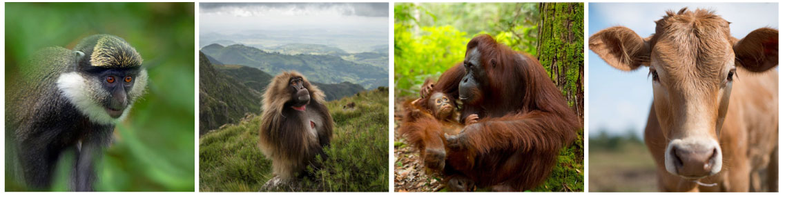

Comparative genomic analysis of deltaretroviruses using Deltaretrovirus-GLUE
Deltaretrovirus-GLUE is a data resource designed to facilitate comparative analysis of deltaretrovirus genomes. It was created using the GLUE software environment.

Some of the mammalian species known to harbour deltaretrovirus infections. Left to right: (i) guenons; (ii) geladas; (iii) orang utan; (iv) cattle.
The Deltaretrovirus-GLUE project not only contains data items required for comparative genomic analysis - i.e. virus genome sequences, multiple sequence alignments, genome feature annotations, and other sequence-associated data - but also, loading the project into the GLUE software framework creates a relational database that represents the semantic relationships between these data items. This creates powerful framework for performing standardised comparative analysis, via GLUE's command layer.
Deltaretrovirus reference sequences
Deltaretrovirus-GLUE contains GLUE reference sequences for all known deltaretrovirus species. Reference sequences are linked to auxiliary data in tabular format.
For each deltaretrovirus species, we have created a 'master' reference sequence, as follows:
- Primate T-lymphotrophic virus type 1: (J02029)
- Primate T-lymphotrophic virus type 2: (M10060)
- Primate T-lymphotrophic virus type 3: (DQ093792)
- Primate T-lymphotrophic virus type 4: (EF488483)
- Bovine leukemia virus : (K02120)
Deltaretrovirus genome features
Deltaretroviruses have enveloped, spherical virions and a small, circular DNA genome ~3 kilobases (Kb) in length. The genome is characterised by a highly streamlined organization incorporating extensive gene overlap - the open reading frame (ORF) encoding the viral polymerase (P) protein occupies most of the genome and typically overlaps at least one of the ORFs encoding the core (C), and surface (S) proteins.
We defined a standard set of genome features for deltaretroviruses and mapped the locations of these genome features onto out chosen reference sequences (see here).
Phylogenetic trees
We used GLUE to implement an automated process for deriving midpoint rooted, annotated trees from the alignments included in our project.
Trees were constructed at distinct taxonomic levels:
Species level trees were reconstructed from a filtered set representing all available GenBank sequences for that species, and for distinct genes and ORFs in the deltaretrovirus genome. Taxa sets were filtered based on alignment coverage (minimum 50% coverage for the gene feature under examination).
All trees are associated with annotation files, so that sequence-related information can be displayed on tree tips. We recommend using FigTree to view these trees.
Note: some deltaretrovirus species have an insufficient number of published sequences for phylogeny reconstruction, once filters have been applied.
Project-specific schema extensions
Deltaretrovirus-GLUE extends GLUE's core schema through the incorporation of a number of additional fields in the sequence table, and a project-specific custom table: 'isolate'. These schema extensions are defined here. The isolate table is linked to the main 'sequence' table via the sequence ID field. It contains information pertaining to viral isolates, e.g. species sampled, date and location of sample.
Related Publications
Singer JB, Thomson EC, McLauchlan J, Hughes J, and RJ Gifford
(2018)
GLUE: A flexible software system for virus sequence data.
BMC Bioinformatics
[view]
Zhu H, Dennis T, Hughes J, and RJ Gifford
(2018)
Database-integrated genome screening (DIGS): exploring genomes heuristically using sequence similarity search tools and a relational database.
[preprint]
License
This project is licensed under the GNU Affero General Public License v. 3.0.